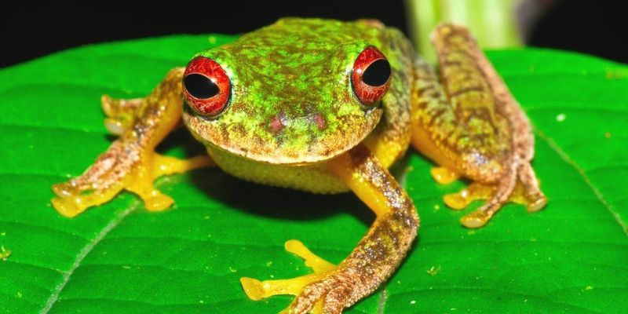

RANA - OJOS DE RUBI

El sapo de ojos color rubí de unos tres o cuatro centímetros que fue descubierto a una altitud de 2000 metros causó una
especial fascinación. Fue hallado en la selva tropical montañosa de Chocó. Los científicos escalaron pendientes muy
inclinadas durante una hora para llegar al hábitat donde encontraron la nueva especie. Este rasgo es extremadamente
extraño en un anfibio y su descubrimiento ofrece una gran oportunidad para aprender más acerca de cómo y porqué se
adaptó de esta manera. La razón por la que no se identificó a este sapo antes es porque se salta la etapa de los renacuajos y de
sus huevos salen directamente sapos jóvenes.
- Sus crías asimilan el color de las hojas caídas del suelo del bosque en el que viven y resulta muy difícil visualizarlas.
- Vive en arroyos y en sus alrededores y lleva cuidadosamente en sus espaldas a sus renacuajos recién salidos del cascarón.
- Duerme durante el día en la parte inferior de las hojas.
- Cuando es molestado abre sus saltones ojos rojos y muestra sus grandes patas naranjas y sus costados, que son de un brillante azul y amarillo.
- Es de tamaño mediano.
MENU